Open Science and Reproducibility
From the replication crisis to Registered Reports
![]()
CODEC: Cognitive and Behavioural Sciences
EvoCo: Human Behaviour and Evolution Lab
Faculty of Psychology · Universidad El Bosque
10 August 2026
📲 Access the Slides Online
Outline
The Reproducibility Crisis
The replication crisis, questionable research practices, and incentive structures.A Global Challenge
Unequal access to reading and producing science, and where Brazil and Latin America stand.What is Open Science?
Definitions, motivation, and the pillars of open research practice.Preregistration
What it is, how it works, and why it improves research transparency.Registered Reports
A peer-review model that shifts the focus to study design and rigour.
Part 1: The Reproducibility Crisis
1.0 How is scientific knowledge actually built?
How do we know if two things are really related?
Does my cat’s meowing predict how many donuts I dream about?
(this is Electra, my “cat”)
1.0 How is scientific knowledge actually built?
Does my cat’s meowing predict how many donuts I dream about?
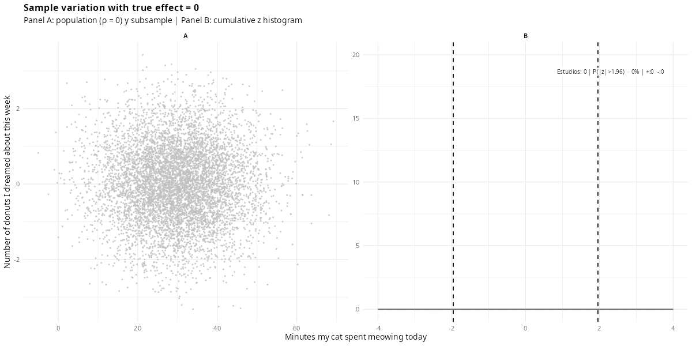
1.0 How is scientific knowledge actually built?
Does my cat’s meowing predict how many donuts I dream about?
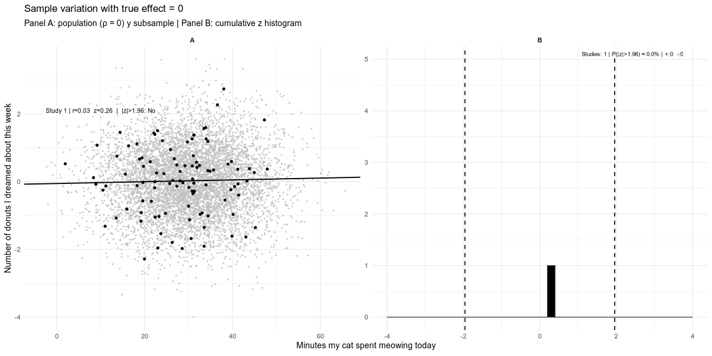
1.0 How is scientific knowledge actually built?
Does my cat’s meowing predict how many donuts I dream about?

1.0 What just happened?
There is no real relationship between these two variables
Yet, by chance alone, some simulated studies still come out “significant”
Now imagine that only the “significant” ones get submitted, reviewed, and published
1.0 Why is it so hard to produce knowledge we can trust?
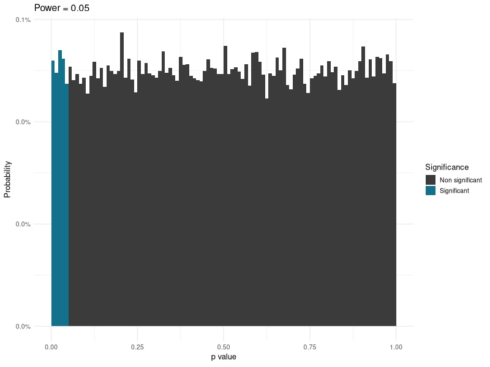
1.0 Why is it so hard to produce knowledge we can trust?
Q: What percentage of published findings in psychology are statistically significant?
Q: What percentage of published findings in psychology are statistically significant?
96%
1.1 Can we trust the literature?
There are two options:
- We study effects with >90% power and >90% probability of being true.
- There is massive publication bias.
1.1 Can we trust the literature?
- There is massive publication bias (across multiple disciplines).
1.2 The significance filter
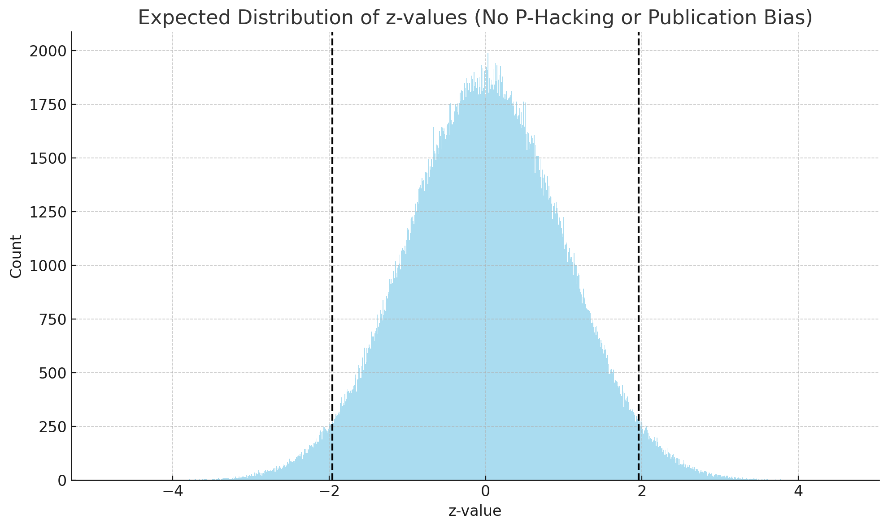
1.2 The significance filter
Also found in PLOS One
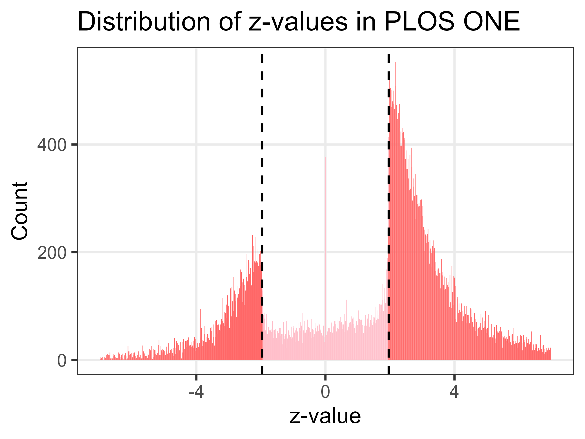
1.3 Ten threats, one root cause
Where do false positives come from?
Almost every step of the pipeline can be bent toward a “significant” result
1.3 Ten threats, one root cause
🧪 P-hacking 💡 HARKing 📦 Publication Bias 📏 Low Power 🔧 Flexible Pipelines 🧠 No Preregistration 🧾 Poor Reporting 📊 Selective Reporting 🔄 Data/Code Not Shared 🌐 Cultural Incentives
1.3 Ten threats, one root cause
🧪 P-hacking 💡 HARKing 📦 Publication Bias 📏 Low Power 🔧 Flexible Pipelines 🧠 No Preregistration 🧾 Poor Reporting 📊 Selective Reporting 🔄 Data/Code Not Shared 🌐 Cultural Incentives
1.3 Ten threats, one root cause
P-hacking and HARKing deserve a closer look
🧪 P-hacking 💡 HARKing 📦 Publication Bias 📏 Low Power 🔧 Flexible Pipelines 🧠 No Preregistration 🧾 Poor Reporting 📊 Selective Reporting 🔄 Data/Code Not Shared 🌐 Cultural Incentives
1.4 P-hacking
Trying multiple analyses until p < .05
Every extra test, covariate, or exclusion rule you try (and don’t report) inflates the real Type I error rate, silently
1.5 HARKing
Hypothesising After the Results are Known
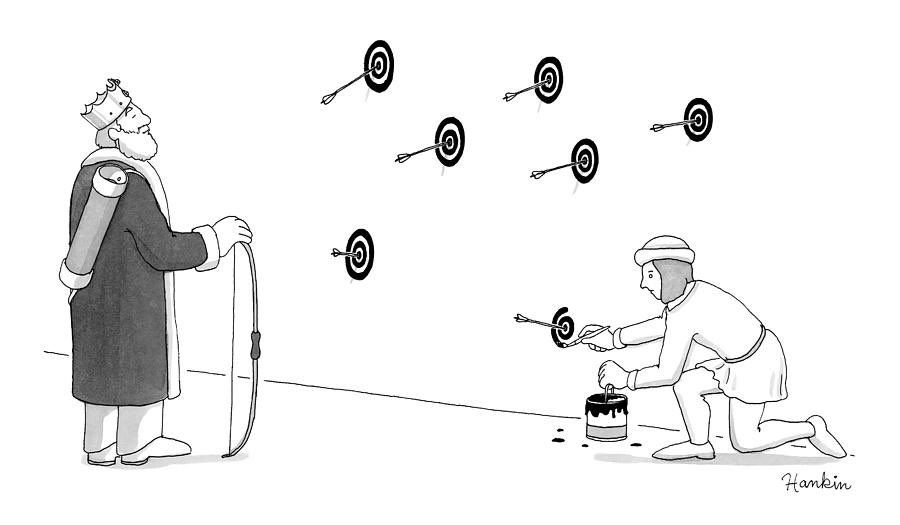
1.5 HARKing
Hypothesising After the Results are Known
It turns an exploratory finding into something that looks like a confirmed prediction
1.6 The common thread
It’s not (only) bad actors
Most of this happens through ordinary, well-intentioned choices, made after seeing the data
1.6 The four horsemen of the reproducibility apocalypse
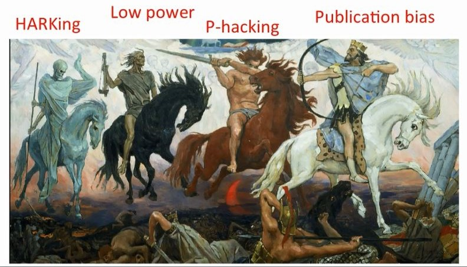
1.6 The four horsemen of the reproducibility apocalypse
Part 2: A Global Challenge
2.1 It’s not just about replicating findings
It’s also about who gets to read science, who is represented, and who gets to produce it
2.2 Unequal access to knowledge
Q: How much does it typically cost to read a single paywalled article?
2.2 Unequal access to knowledge
Q: How much does it typically cost to read a single paywalled article?
A: US$30–50
For a single article.
2.2 Unequal access to knowledge
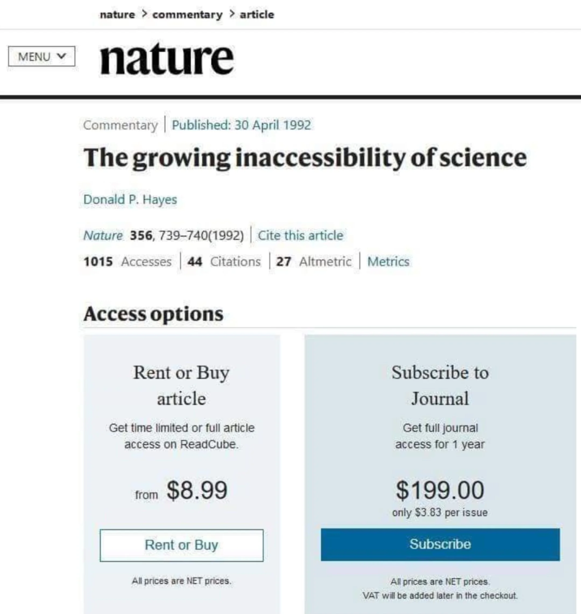
2.2 Unequal access to knowledge
2.3 Unequal representation in knowledge
Societies:
Western
Educated
Industrialised
Rich
Democratic
2.4 Unequal access to producing knowledge
{kind=link}
Data: SCImago Journal & Country Rank
2.4 Unequal access to producing knowledge
Q: What share of the world’s scientific output do you think comes from Latin America?
2.4 Unequal access to producing knowledge
Q: What share of the world’s scientific output do you think comes from Latin America?
3-6%
Up from ~1.5% in the early 1990s (Hermes-Lima et al., 2007; Hidalgo, 2020), despite the region being home to ~8% of the world’s population
2.5 Two different bottlenecks
Reading science
- Subscriptions and paywalls
- Excludes readers without institutional access
Producing science
- Article Processing Charges (Gold OA)
- Excludes authors without funding to pay them
2.5 Two different bottlenecks
The uncomfortable part
Gold Open Access doesn’t remove the barrier.
It just moves it from the reader to the author.
2.6 Not all Open Access is the same
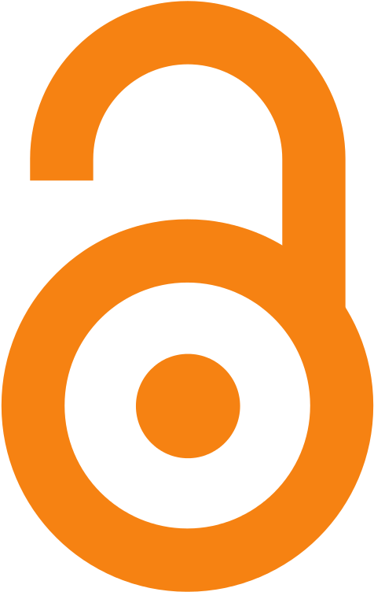
| Model | Who pays | Who is excluded |
|---|---|---|
| Closed | Reader (subscription) | Readers without institutional access |
| Gold OA | Author (APC, often US$1,000–3,000+) | Authors without funding |
| Green OA | No one | (self-archived preprint/postprint) |
| Diamond OA | No one | (community/institution-funded) |
2.6 Not all Open Access is the same
| Model | Who pays | Who is excluded |
|---|---|---|
| Closed | Reader (subscription) | Readers without institutional access |
| Gold OA | Author (APC, often US$1,000–3,000+) | Authors without funding |
| Green OA | No one | (self-archived preprint/postprint) |
| Diamond OA | No one | (community/institution-funded) |
2.7 Brazil: a regional leader
- Home to SciELO, one of the largest Open Access publishing infrastructures in the world
- CAPES and national policy have pushed Open Access for over a decade
- The most mature and robust academic ecosystem in Latin America
- But the regional gap in who produces high-impact science remains
2.8 So what can we actually do about it?
The good news: the solutions that fix the reproducibility crisis are often the same ones that lower these barriers
Green or Diamond OA Preprints Preregistration Registered Reports
None of them require an APC, a paywall, or a well-funded lab
Part 3: What is Open Science?
What do we mean by “Open Science”?
Open Science is the movement to make the process and products of research (data, code, materials, and publications) openly accessible, transparent, and reusable.
Not a single practice, but a set of principles that can be applied at every stage of the research cycle: from planning a study to sharing its results.
Why does this matter?
- Science is meant to be self-correcting; but correction requires that others can check, reuse, and build on our work
- Closed research is inefficient: it duplicates effort and slows discovery
- Public funding and public trust create an obligation to share what we produce
Some Building Blocks of Open Science
📂 Open Data: sharing the raw data behind a finding, so exclusions and re-analyses can actually be checked
(E.g. the FAIR principles)
💻 Open Code: sharing the analysis scripts, the flexible pipelines behind p-hacking, made visible
🧰 Open Materials: sharing stimuli, questionnaires, and protocols
📄 Open Access: publishing so anyone can read it.
(Green and Diamond OA don’t move the $ barrier to the author)
📝 Preregistration: stating the plan before seeing the data, the direct answer to HARKing
🔒 Registered Reports: preregistration taken one step further, peer-reviewed before data collection
Why this matters for psychology and behavioural sciences
- Psychology has been at the centre of the reproducibility conversation for over a decade
- Our data are often costly to collect (human participants, time, ethics approval); reuse and transparency multiply their value
- Open practices are increasingly expected by journals, funders, and evaluation committees
- Open Science is the field’s structured response to everything you’ve just seen
The rest of this talk covers two of its most concrete tools
Part 4: Preregistration
4.1 What is preregistration?
Preregistration is the act of specifying your research plan before conducting the study.
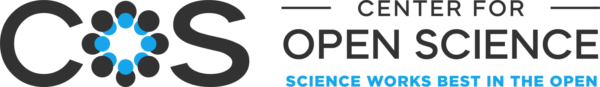
4.1 The preregistration pipeline
The traditional publishing pipeline
collect data
↻ often several rounds
4.1 The preregistration pipeline
write hypotheses/methods
(OSF, AsPredicted...)
pre-registered analyses
↻ often several rounds
4.1 Why preregister?
- Enhances credibility by making your intentions transparent
- Helps you plan better and avoid analytical drift
- Keeps all your design and analysis decisions in one place, even before data collection!
4.1 Can I still explore my data?
Absolutely! Preregistration doesn’t ban exploration; it just draws a clear line between confirmatory and exploratory analyses
- You can deviate from your plan. Just be upfront and explain why
- The goal isn’t rigidity, but transparency
4.2 Key Benefits of Preregistration
| Effect | Description |
|---|---|
| Transparency | Public hypotheses and plans (Toth et al., 2019) |
| Less Bias | Encourages reporting of null results (Marsden et al., 2022) |
| Clearer Claims | Exploratory ≠ confirmatory (Dewitte et al., 2021) |
| Better Quality | Plans include power, exclusion criteria, etc. (Ioannidis, 2022) |
| Credibility | Deviations from the plan are explicit (Waldron & Allen, 2022) |
| Easier Review | Reviewers can see the original plan (Toth et al., 2019) |
4.3 How does it work in practice?
- Write your hypotheses, design, and analysis plan in a structured template (e.g. AsPredicted, or a full OSF template)
- Submit it to a public registry (for example OSF Registries)
- The registry time-stamps the plan and issues a permanent, citable DOI
- You can make it public immediately, or place it under a temporary embargo
- Only then do you collect your data
4.4 Limitations & Considerations
- Not a cure-all: vague preregistrations still allow bias (Waldron & Allen, 2022)
- Some concerns: added bureaucracy, misuse, or an overly rigid view of exploratory analysis (Toth et al., 2019)
- Not every research type benefits equally, but the practice is broadly beneficial (Dewitte et al., 2021)
Part 5: Registered Reports
Preregistration vs. Registered Reports
The important (but confusing) distinction!
Preregistration
- You register your plan yourself
- No peer review of the plan before data collection
- Publication is not guaranteed: you still submit and compete after the study is done
- A record that keeps you honest and makes deviations visible
Registered Reports
- The plan is peer-reviewed by a journal or platform
- Reviewers can improve the design before data exist
- Publication is provisionally guaranteed if the plan is followed (in-principle acceptance)
Every Registered Report is preregistered. Not every preregistration becomes a Registered Report.
5.1 How Registered Reports differ (reiterated)
- Peer review happens before data collection, not after
- Because feedback arrives while there’s still time to act on it, designs tend to be stronger
- Reviewers become collaborators helping you improve the study, not judges evaluating a finished one (far less adversarial)
- Acceptance is based on the theoretical rationale and methods, decided before anyone knows the results
- The filter that produces the 96% and the publication bias you saw earlier simply doesn’t exist here
5.2 The Registered Reports pipeline
write Intro/Methods
↻ often several rounds
with reviewers
write Results/Discussion
(typically lighter)
5.3 What goes into a Stage 1 submission?
Almost every RR template (PCI RR included) asks you to fill in some version of the same design table. Everything in it is written before you collect a single data point.
5.3 The design table
| Component | What you specify |
|---|---|
| Question | The research question, stated precisely enough to be testable |
| Hypothesis | The specific, directional prediction(s) you are testing |
| Sampling Plan | How the data will be collected, and a justified sample size (e.g. an a priori power analysis) |
| Analysis Plan | The exact statistical test(s), and the criteria that would count as support or non-support |
| Interpretation given different outcomes | What each possible result — supportive, non-supportive, ambiguous — would mean, decided before seeing the data |
This is what reviewers evaluate at Stage 1: not whether the result will be “interesting”, but whether the plan is sound.
5.3 The design table
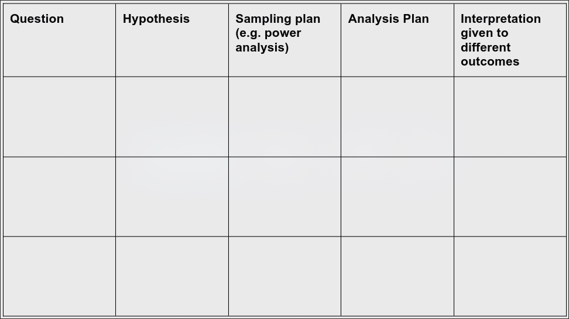
From Nature Human Behaviour.
5.4 Key Benefits
| Effect | Description |
|---|---|
| Reduces Publication Bias | Acceptance is based on design, not results (Chambers & Tzavella, 2022) |
| Methodological Rigour | Early peer review strengthens design and analysis plans [ |
| Transparency | Protocols are pre-specified and openly available (Nosek & Lakens, 2014) |
| Reduces Questionable Practices | Limits p-hacking and HARKing (Lakens et al., 2024) |
| Constructive Early Feedback | Expert input on design before data collection (Kiyonaga & Scimeca, 2019) |
| Values Null Results | Studies are published regardless of outcome (@ Chambers & Tzavella, 2022) |
5.5 The PCI RR model
5.5 The PCI RR model
Peer Community In Registered Reports (PCI RR) is a free, non-profit platform for reviewing and recommending Registered Reports.
manuscript
on the platform
full report
of the full report
- Journal-agnostic, more control over where you publish, and fully transparent, open peer review throughout.
- Or publish directly through Peer Community Journal, PCI RR’s own free, diamond-OA journal
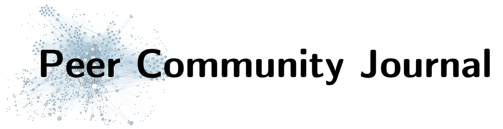
5.5 The design table, as PCI RR asks for it
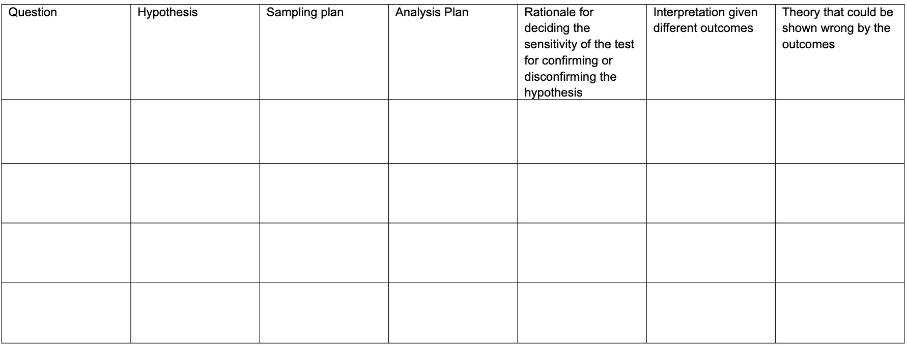
Source: PCI Registered Reports — Stage 1 submission template
5.6 Why this is especially valuable for grad students
- No article processing charge (APC) through the PCI RR recommendation route
- Publication is essentially guaranteed once the plan is accepted, regardless of whether the results are “exciting”
- Expert peer review improves your design while you can still change it, not after the data are already collected
- Reduces the pressure to produce a significant result to be publishable
5.7 Real-World Adoption
- ✅ Over 300 journals now offer Registered Reports
- 🧪 Used across disciplines: psychology, ecology, medicine, economics, and more
- 💬 Growing support from funders and institutions
- 🌍 PCI RR offers a global, open-access alternative to journal-based review
Sources: cos.io, PCI RR, (Chambers & Tzavella, 2022)
5.7 Real-World Adoption: the effect on the record
5.8 Are Registered Reports Always Appropriate?
- Not ideal for purely exploratory or rapid-response studies
- Adds planning time and a peer-review step before data collection begins
- But most confirmatory studies (the majority of grad-student theses) benefit from this model
5.9 What if I already have some data?
- PCI RR recognises a range of bias-control levels, not just brand-new data. Secondary analyses of existing data are still eligible
- The less “untouched” your data are, the more safeguards you need (e.g. a blinded analyst, a stricter statistical threshold) to reach a given level — but it’s still possible
- Plan your study and submit before collecting any data, and you automatically qualify for the highest level — the strongest form of evidence this model can produce
5.9 Levels of bias control recognised by PCI RR
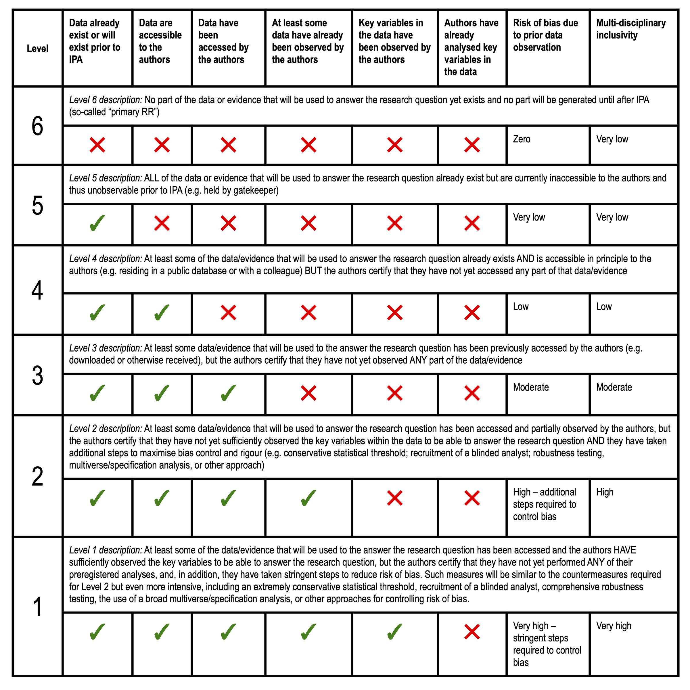
Source: PCI Registered Reports — for reference when you’re ready to submit
{kind=link}
Closing: How to Start
Practical First Steps
- Pick a study you’re planning that tests a clear hypothesis
- Fill in a design table for it — Question, Hypothesis, Sampling Plan, Analysis Plan, and Interpretation for each outcome — before collecting data (see §5.3)
- Try a simple preregistration first (e.g. AsPredicted, via OSF)
- For your next confirmatory study, consider submitting a Stage 1 Registered Report to PCI RR
- Ask your supervisor or lab whether preregistration could become a standard step in your group’s workflow
Key Resources

- OSF Registries: https://osf.io/registries
- PCI Registered Reports: https://rr.peercommunityin.org
- Center for Open Science: https://www.cos.io
Summary
- Many threats to replicability are systemic, but solvable
- Preregistration helps you plan better, interpret results honestly, and build credibility
- Registered Reports realign incentives and put peer review where it can do the most good: before the data exist
- Tools like OSF and PCI RR make both accessible and free
Summary
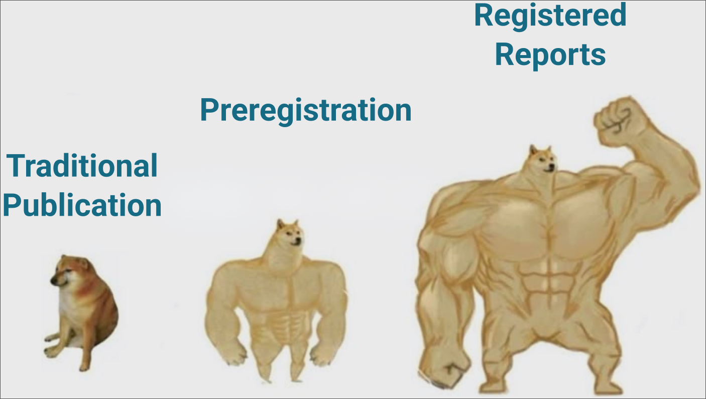
Take-Home Message
Questions?
Thank you for your attention! Happy to discuss, critique, or hear about your own experience with these practices.
Thank you!
Juan David Leongómez PhD, MSc
jleongomez@unbosque.edu.co
References
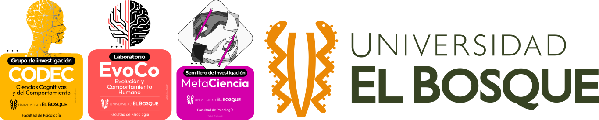
Juan David Leongómez PhD, MSc — Open Science and Reproducibility, UnB 2026